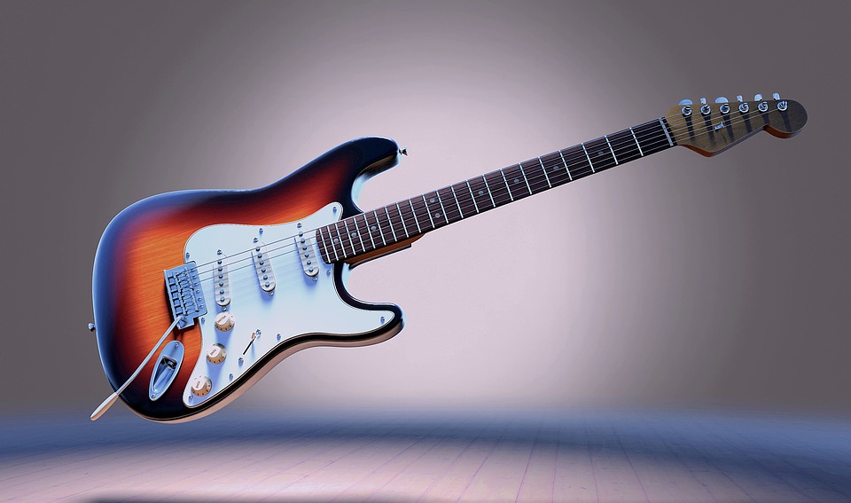
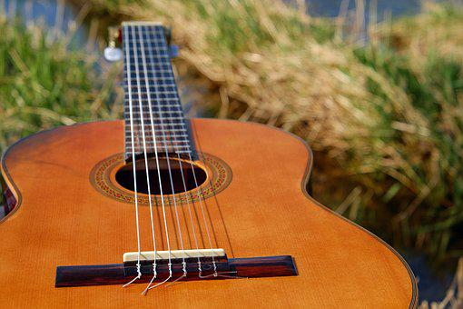
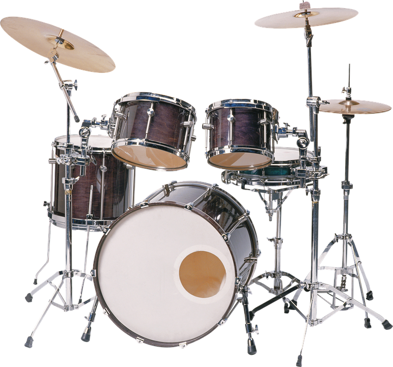
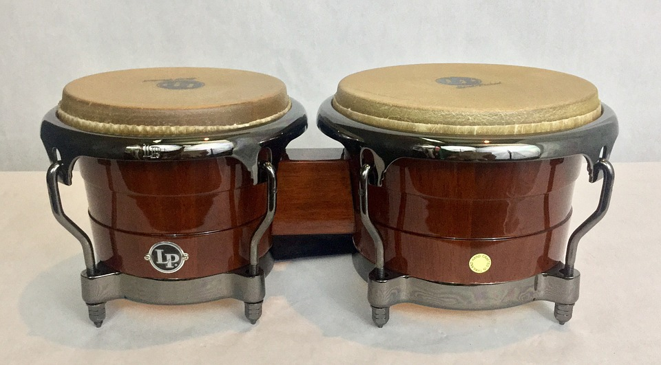

Instrumentos de cuerda
Guitarra Cassino Vintage
 Guitarra replica de las originales Gibson de los años 50 con su sonido clasico y brillante caracteristico
Guitarra replica de las originales Gibson de los años 50 con su sonido clasico y brillante caracteristico
Guitarra Fender Stratocaster
La guitarra Fender stratocaster es una de las más reconocidas a nivel mundial por su gran sonido.
Guitarra Romantica
Guitarra clásica marca Romantica, de alta calidad, caracteristica por su sonido brillante y atractivo
Instrumentos de percusión
Bateria Basic
Esta es una batería excelente para comenzar, muy liviana y portable para llevar a donde sea.
Bongo Funk
Instrumento profesional tropical fabricado por nosotros mismos, ideal para interpretes de musica caribeña.